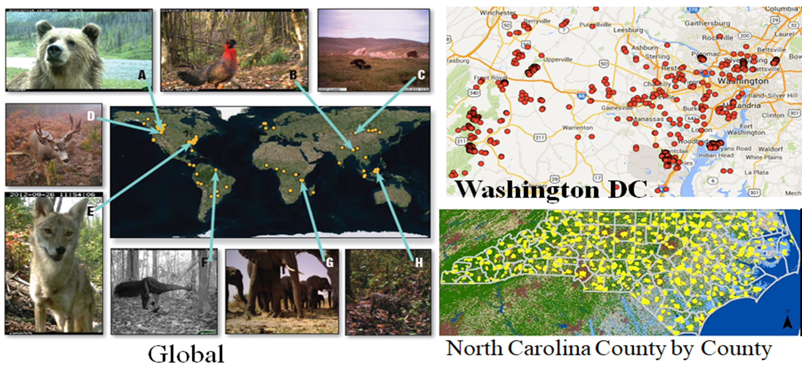
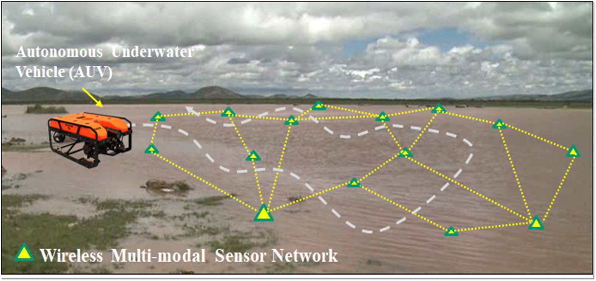
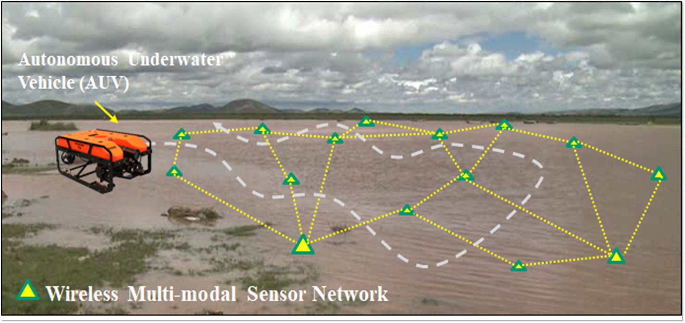

Primary Research Areas
- Intelligent sensor design, machine vision, multimodal perception of human behavior
- Big data intelligent analysis, machine learning, data fusion, data mining
- Large-scale data visualization
- Physiological function assessment
- Fall detection, AI disease monitoring, and early warning
Research Group
 |
The Artificial Intelligence Laboratory at Southern University of Science and Technology (SUSTech), led by Professor Zhihai He, focuses on research areas such as intelligent sensor design, computer vision, multimodal perception of human behavior; big data intelligent analysis, machine learning, data fusion, and data mining; large-scale data visualization; physiological function assessment; fall detection; AI disease monitoring and early warning. The research team comprises 1 postdoctoral researcher, 5 Ph.D. students, 9 master's students, and 6 undergraduate students.The SUSTech Artificial Intelligence Laboratory is dedicated to structured spatial reasoning and next-generation deep learning; networked distributed deep learning for the Internet of Things (IoT); and research on deep intelligent human-computer interaction systems. This includes the development of models for smart elderly care based on IoT and sensor-driven data analysis, leading to disease prediction and warning. |
Research Achievements
|
Implemented a smart elderly care model based on the Internet of Things (IoT) and sensor-driven data analysis, leading to the generation of disease warnings. The research indicates that, within 2-4 weeks of disease onset, signs and patterns of common elderly diseases can be identified through the analysis of sensor data. Laboratory Projects National Natural Science Foundation of China (NSFC) Special Fund Project-Tian Yuan Foundation: Novel High-Resolution Imaging Methods and Theoretical Research on Non-Invasive HaemodynamicsDuration: January 2025 to December 2026 National Natural Science Foundation of China (NSFC), Key Project:Theory and Methods of Screen Hybrid Content Coding Based on Multi-agent Collaborative LearningDuration: January 2024 to December 2028 Horizontal Project: Research on 3D Display Optical Calibration and Image Quality Enhancement Methods(Subproject within the USTC-Huawei Photonics Industry Innovation Joint)Duration: January 2022 to December 2022 Horizontal Project: Key Technology Research on Autonomous Navigation for Digital Tactile Paths Based on AI Collaborative AnalysisDuration: June 2023 to May 2024 Horizontal Project: Research Project on AI-based Home Care by Zhenny Technology in the Department of Electronic and Electrical EngineeringDuration: November 2023 Award 2024 Wu Wenjun Artificial Intelligence Science and Technology Award Second Prize for Technological Invention, Project name: Big model-driven home-based AI doctor and whole-patient management, Chinese Society for Artificial Intelligence |

 

|